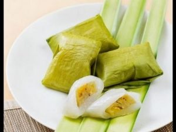

Doko-doko

Doko-doko Cangkuning (Bugis) atau Roko-roko Cangkuning (Makassar) merupakan salah satu kue tradisonal Bugis Makassar yang sebenarnya sudah ada diseluruh nusantara, meski serupa namun pada dasarnya tidak sama. Di Jawa, kue ini dikenal dengan nama kue mendut, dibungkus dengan daun pisang muda dengan dilipat segiempat sedangkan di Sumatera, terutama Sumatera Barat, kue ini disebut dengan nama “lapek bugis” atau “lepat bugis”, dibungkus dengan daun pisang dan dilipat menyerupai piramida.
Doko artinya bungkus yang diisi dengan adnonan bugis yang disebut cangkuning. Karena dibungkus lagi dengan daun, makanya dinamakan doko-doko cangkuning.
Resep Kue Doko-Doko Cangkuning
Bahan cangkuning:
Kelapa setengah tua parut yang dimasak bersama air gula merah kental dan daun pandan sampai kering.
Bahan I :
~ 125 gr tepung ketan hitam
~ 1/2 sdt garam
~ 125 gr santan kental
Bahan II :
~ 250 gr tepung beras
~ 50 gr sagu tani
~ 150 gr gula pasir
~ 1/2 sdt garam
~ 1/2 sdt vanili
~ 800 ml santan kental
~ 2 lembar daun pandan
~ daun pisang
Cara membuat :
~ Bahan I : campur tepung ketan dan garam, aduk rata. Tuang sedikit-sedikit santan kental sambil diulen hingga kalis.
~ Pipihkan adonan, beri isian cangkuning. Tutup lagi dan bentuk bulat. Selesaikan semua adonan. Sisihkan.
~ Bahan II : campur tepung beras, tepung sagu, gula pasir, vanili dan garam. Aduk rata.
~ Tuang santan. Aduk menggunakan whisk sampai rata.
~ Masak di atas api sedang bersama daun pandan sambil diaduk terus agar bawahnya tidak gosong.
~ Masak sampai adonan kental dan sudah tidak bergerindil.
~ Ambil daun pisang, lipat bentuk kerucut.
~ Beri bahan tepung beras.
~ Tambahkan isian ketan itam sambil ditekan sedikit.
~ Tambahkan lagi bahan tepung beras di atasnya sambil dipadatkan.
~ Lipat daun pisang dari arah bawah, kiri lalu kanan.
~ Terakhir bagian atas lipat ke bawah sambil diselipkan masuk dalam lipatan.
~ Kukus dalam dandang yang sudah didihkan airnya selama 30 menit.
~ Angkat. Dinginkan.
Sumber: 100resepmasaka.blogspot.com